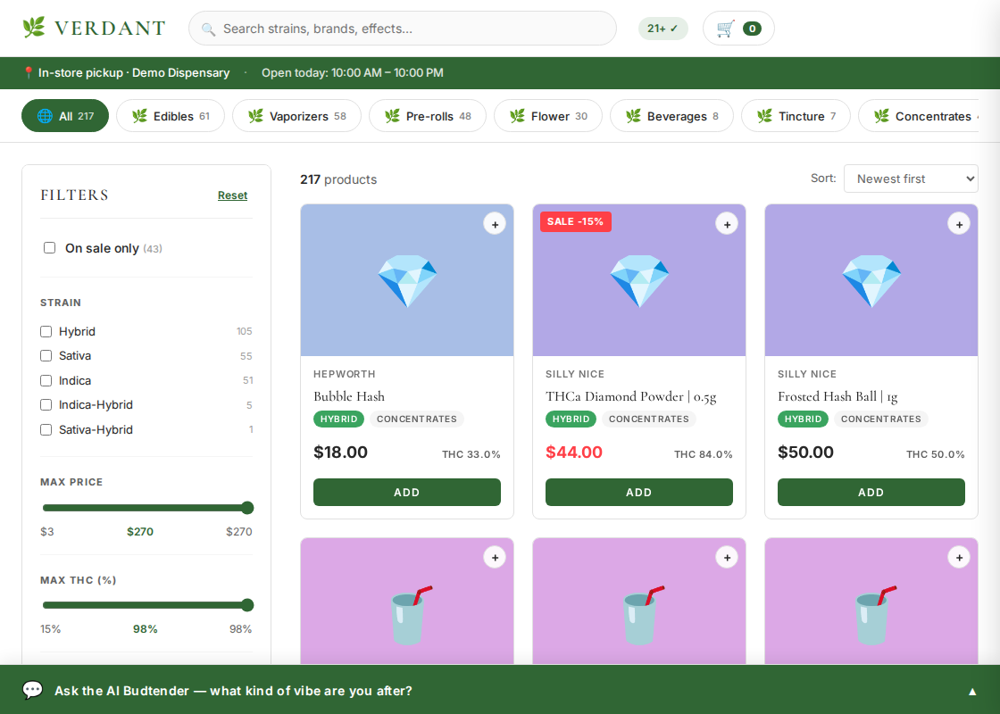

Tom Z
LLM Agent & AI Chatbot Developer — Custom RAG, API Integrations
I ship LLM products that can prove what they claim: grounded retrieval with source citations, eval harnesses in CI, compliance guardrails, and data pipelines that record failures instead of inventing numbers. Based in New York City.

Cannabis AI Budtender
LLM agent · regulated-industry compliance · RAG over live product data
- Conversational product advisor for a NY cannabis dispensary: structured-SQL retrieval over a live 217-product catalog, with source citations.
- Compliance guardrails (no medical claims, age gating) — passes a 6/6 compliance eval suite; ~95% overall eval accuracy.
- 148 automated tests running in GitHub Actions CI; rate-limited FastAPI backend deployed on Render.
Free-tier hosting: first load may take ~50s to wake up.
SERP Rank Tracker
Data pipeline · verifiable-data design · SerpAPI + SQLite → static dashboard
- Daily Google rank tracking that records failures instead of inventing rankings — failed fetches stay FAILED with retry trails, never interpolated.
- Every position traces to an archived raw API response; per-row verification drawer with a "check it on Google yourself" link.
- Real data collected daily by cron; demo backfill stored as a separate, clearly-labeled layer; CSV export included.
Dashboard refreshes daily with real collected rankings.